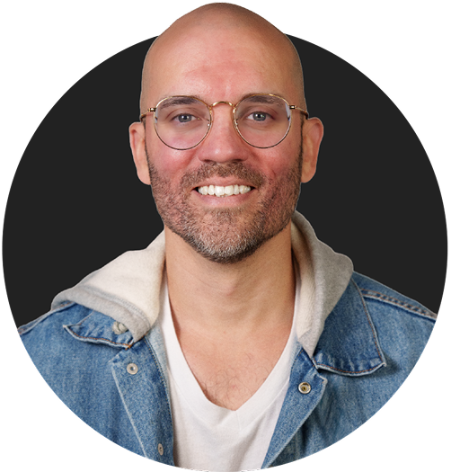

NOEL
Deputy Program Manager & Lead UX Strategist
Results-driven UX Strategist and Deputy Program Manager with over six years of experience delivering measurable business outcomes across healthcare, pharmaceutical, government, and financial services industries.

ABOUT
Hello, my name is Noel Arroyo. I'm a Strategist and Researcher driven by curiosity and grounded in outcomes. New projects and unfamiliar industries don't intimidate me; I bring the same rigor to every engagement, asking the right questions, making data-informed decisions, and staying focused on results that create real business impact. Adaptability is easy to claim, but I consider it my defining strength, and my portfolio reflects that.
What energizes me most is the full lifecycle of a project, from its earliest, most ambiguous stages through to measurable business results. That process is where I do my best work.
Outside of my professional life, I'm a husband and father of three. I'm also a musician, multi-instrumentalist, and visual artist, and I find creativity essential, whether I'm solving a new problem or learning something unfamiliar. In my free time, you might find me hiking, exercising, building a mini-ITX PC, sketching sticker concepts, or composing music on my Synthstrom Deluge. I care deeply about the quality of what I create, and that commitment is reflected in everything I do.
I don't simply deliver work. I deliver results that speak for themselves.

EXPERIENCE
DMI
Deputy Program Manager & Lead UX Strategist
Encora / DMI
Senior Lead UX Design Consultant
DMI
Lead UX Design Consultant
ITI
Senior UX Designer
ITI
UX Designer
Sweetwater
Web Developer/Designer
Sextons Creek Productions
Web Developer/Designer
SELECTED WORK
Credit First National Association | Mobile App
Designing an entire mobile app MVP in one week, from scratch.
MVP Healthcare | Plan Recommendation Tool
Quadrupling conversion rates through the power of research.
Takeda Pharmaceuticals | Campus App
1,500% utilization growth powered by a 1% research investment.
MVP Healthcare | Provider Portal
Setting the foundation for MVP's provider digital transformation.
Need help making a dream come alive?
Let's make it happen!
I'm always excited to work on new and innovative projects. Whether if you're just starting or would like to refine an existing product, I'm interested.
Contact me